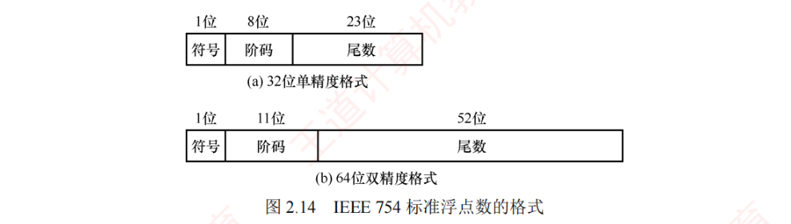
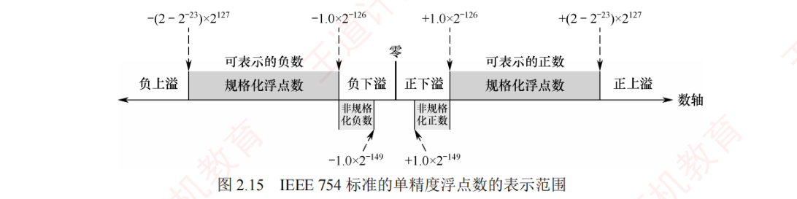
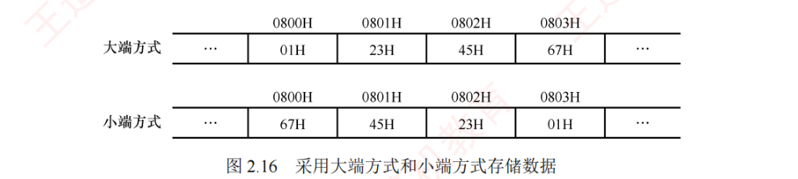
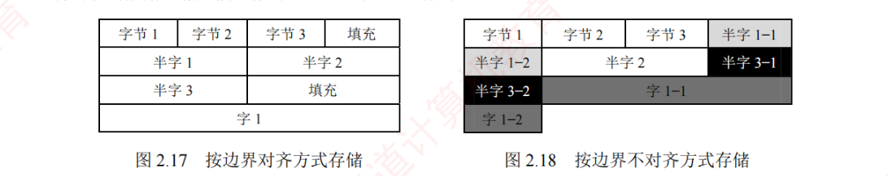

2.3 浮点数的表示与运算
浮点数表示法通过阶码将小数点的位置「浮动」起来：在有限位数下，既能扩大数值的表示范围，又能保持较高的有效精度。例如，用定点数表示电子质量（\(9 \times 10^{-28}\) g）或太阳质量（\(2 \times 10^{30}\) g）极为不便，而浮点数则能高效地表示此类极大或极小的数值。本节的主线是 IEEE 754 标准（格式、偏置值、隐藏位、特殊值）和浮点加减五步流程（对阶 → 尾数加减 → 规格化 → 舍入 → 溢出判断），后者是大题级素材，务必亲手完整算几遍。
通常，浮点数表示为：
$$N = (-1)^S \times M \times R^E$$其中，\(S\)（取值 0 或 1）决定浮点数的符号；\(M\) 是一个非负的定点小数，称为尾数，通常用原码表示；\(E\) 是一个定点整数，称为阶码或指数（一种移码形式）；\(R\) 是基数（通常隐含约定为 2、4 或 16）。可见，浮点数由符号、阶码和尾数三部分组成。
在 IEEE 754 浮点数标准被广泛使用之前，不同计算机所用的浮点数表示格式各不相同。下图展示了一种典型的 32 位短浮点数格式示例：
其中，第 0 位为符号 \(S\)，第 1～7 位为阶码 \(E\)，采用偏置值为 64 的移码表示；第 8～31 位为 24 位尾数 \(M\)，以二进制原码小数表示；基数 \(R\) 为 2。在该格式中，阶码的值决定了小数点的实际位置（表示范围），尾数的位数决定了表示值的精度。
2.3.1IEEE 754 标准的浮点数
1. IEEE 754 标准的浮点数格式
现代系统普遍采用 IEEE 754 浮点数标准。该标准定义了两种常用格式：32 位单精度浮点数（float 型）和64 位双精度浮点数（double 型），其基数隐含为 2，其格式如图 2.14 所示。

32 位单精度格式包含 1 位符号 \(s\)、8 位阶码 \(e\) 和 23 位尾数 \(f\)；64 位双精度格式包含 1 位符号 \(s\)、11 位阶码 \(e\) 和 52 位尾数 \(f\)。基数隐含为 2，尾数用原码表示。对于规格化的二进制浮点数，尾数的最高位总是 1。为提升精度，IEEE 754 规定在存储该位时，最高位被隐含，在小数点之前，称为隐藏位。因此，单精度格式的 23 位尾数实际提供了 24 位有效数，双精度格式的 52 位尾数实际提供了 53 位有效数。例如，\((12)_{10} = (1100)_2\)，规格化后为 \(1.1 \times 2^3\)，其中小数点前的「1」不实际存储，尾数仅保存小数部分「100…0」，而阶码保存的是指数 3 的编码值。
IEEE 754 标准的阶码采用移码表示，但偏置值并不是通常 \(n\) 位移码所用的 \(2^{n-1}\)，而是 \(2^{n-1} - 1\)。因此，单精度和双精度的偏置值分别为 127 和 1023。例如，指数真值为 3，则在单精度格式中，阶码为 \(127 + 3 = 130\)（82H）；在双精度格式中，阶码为 \(1023 + 3 = 1026\)（402H）。
IEEE 754 标准的规格化单精度浮点数的真值为：
$$(-1)^s \times 1.f \times 2^{e-127}$$规格化双精度浮点数的真值为：
$$(-1)^s \times 1.f \times 2^{e-1023}$$其中，规格化单精度浮点数的阶码 \(e\) 的取值范围为 1～254（8 位，全 0 和全 1 保留用于特殊值）；规格化双精度浮点数的阶码 \(e\) 的取值范围为 1～2046（11 位，保留用途相同）。
2. IEEE 754 格式浮点数的表示范围
IEEE 754 规格化浮点数的表示范围见表 2.2。
| 格式 | 最小值 | 最大值 |
|---|---|---|
| 单精度 | \(1.f \times 2^{1-127} = 1.0 \times 2^{-126}\) | \(e = 254,\ f = 111\cdots 1\)：\(1.11\cdots 1 \times 2^{254-127} = (2-2^{-23}) \times 2^{127}\) |
| 双精度 | \(1.f \times 2^{1-1023} = 1.0 \times 2^{-1022}\) | \(e = 2046,\ f = 111\cdots 1\)：\(1.11\cdots 1 \times 2^{2046-1023} = (2-2^{-52}) \times 2^{1023}\) |
当浮点数运算结果的绝对值超过最大规格化数时，发生上溢（也称溢出），可分为：
- 正上溢：若结果为正且大于最大规格化正数；
- 负上溢：若结果为负且小于最小规格化负数（绝对值超过最大规格化正数）。
IEEE 754 对上溢的处理规则：① 将结果设为 \(+\infty\) 或 \(-\infty\)；② 置位浮点溢出异常标志。IEEE 754 规定，默认情况下不触发异常中断，程序继续执行，除非显式开启此类异常响应。
当运算结果的绝对值小于最小规格化数值但不为零时，发生下溢，可分为：
- 正下溢：若结果为正值，且处在 0 到最小规格化正数之间；
- 负下溢：若结果为负值，且处在最大规格化负数到 0 之间。
对下溢的处理采用渐进下溢机制：① 若结果落在非规格化数可表示范围内，则以非规格化形式存储，保留部分有效数字；② 若结果更接近 0（舍入后为零），则存储为 +0 或 −0，并置位浮点下溢异常标志。同样，默认情况下不触发异常中断，除非显式启用异常处理。
IEEE 754 标准的单精度浮点数的表示范围如图 2.15 所示。

3. 几种特殊的 IEEE 754 浮点数
在 IEEE 754 标准中，当阶码全为 0 或全为 1 时，浮点数具有特殊含义，见表 2.3。
| 值的类型 | 单精度（32 位） | 双精度（64 位） | ||||
|---|---|---|---|---|---|---|
| 符号 | 阶码 | 尾数 | 符号 | 阶码 | 尾数 | |
| 正零 | 0 | 0（全 0） | 0 | 0 | 0（全 0） | 0 |
| 负零 | 1 | 0（全 0） | 0 | 1 | 0（全 0） | 0 |
| 正无穷大 | 0 | 255（全 1） | 0 | 0 | 2047（全 1） | 0 |
| 负无穷大 | 1 | 255（全 1） | 0 | 1 | 2047（全 1） | 0 |
| 无定义（非数） | 0 或 1 | 255（全 1） | \(f \neq 0\) | 0 或 1 | 2047（全 1） | \(f \neq 0\) |
| 非规格化正数 | 0 | 0（全 0） | \(f \neq 0\) | 0 | 0（全 0） | \(f \neq 0\) |
| 非规格化负数 | 1 | 0（全 0） | \(f \neq 0\) | 1 | 0（全 0） | \(f \neq 0\) |
对上表逐条解释：
- 全 0 阶码全 0 尾数：+0/−0。符号 \(s\) 决定其正负，通常情况下视 +0 和 −0 是等效的；
- 全 1 阶码全 0 尾数：+\(\infty\) / −\(\infty\)。\(+\infty\) 在数值上大于所有有限数，\(-\infty\) 则小于所有有限数。引入无穷大是为了让程序在异常情况下仍能继续执行；
- 全 1 阶码非 0 尾数：NaN（Not a Number），表示一个没有定义的数，称为非数；
- 全 0 阶码非 0 尾数：非规格化数。非规格化数的特点是阶码为 0、不使用隐藏位，尾数字段不全为 0。因此，单精度和双精度非规格化数的值分别为 \(\pm 2^{-126} \times (0.f)\) 和 \(\pm 2^{-1022} \times (0.f)\)。非规格化数用于实现渐进下溢，填补 0 与最小规格化数之间的数值间隙。
4. 十进制数与 IEEE 754 单精度浮点数的相互转换
【例 2.5】将十进制数 −8.25 转换为 IEEE 754 单精度浮点数的十六进制表示。
解：IEEE 754 单精度浮点数的偏置值是 127，最高位隐藏的「1」是隐藏的。先将 −8.25 转换为二进制，即 \(-1000.01_2 = -1.00001 \times 2^3\)；尾数部分取小数点后的 23 位（00001 后补 0 至 23 位）；再计算阶码 \(E\)，\(E = 127 + 3 = 130\)，转换为二进制为 10000010。IEEE 754 单精度浮点数格式为：符号（1 位）+ 阶码（8 位）+ 尾数（23 位），即为：
1 10000010 0000 1000 0000 0000 0000 000
因此，其单精度浮点数格式表示为 1100 0010 0000 1000 0000 0000 0000 0000 = C104 0000H。
【例 2.6】求 IEEE 754 单精度浮点数 C640 0000H 的值是多少。
解：先将 C640 0000H 按二进制展开为：
1100 0110 0100 0000 0000 0000 0000 0000
按 IEEE 754 单精度浮点数格式分为三部分：
| 符号 | 阶码 | 尾数 |
|---|---|---|
| 1 | 1000 1100 | 100 0000 0000 0000 0000 0000 |
因此，符号 1 表示负数；阶码真值为 1000 1100 − 0111 1111 = 000 1101\(_2\) = 13；尾数真值为 \(1 + (0.1)_2 = 1.5\)（注意，含义为尾数含隐藏位 1）。因此，该单精度浮点数的值为 \(-1.5 \times 2^{13}\)。
2.3.2浮点数的加减运算
浮点数运算的特点是阶码与尾数分开处理。浮点数加减运算分为以下几个步骤。
1. 对阶
对阶的目的是使两个操作数的小数点位置对齐，即使它们的阶码相等，以便尾数可以直接相加减。对阶的原则：小阶向大阶看齐，即将阶码较小的数的尾数右移，右移位数等于两阶码差的绝对值。对于 IEEE 754 标准的浮点数，对阶时需进行移码减法运算，以获得阶码差。尾数右移时，保留其数值位，移出位移至附加位（如保护位），为保留尾数而空出的高位部分补 0。为保证运算精度，移出的低位不应丢弃，而应保留参与后续尾数运算。
2. 尾数加减
由于 IEEE 754 标准规定尾数用原码定点小数表示，因此尾数加减运算实质上是定点原码小数的加减运算，应根据相应的规则执行。对于规格化数，在运算前应将隐藏位还原到尾数部分，形成完整的 \(1.f\) 形式。此外，对阶过程中为保留精度而保留的附加位也要参与尾数加减运算。
3. 尾数规格化
在浮点运算中要最大限度保留有效数字，需要对运算结果进行规格化处理。所谓规格化，是指通过调整尾数与阶码，使浮点数的尾数满足最高有效位为 1 的形式。IEEE 754 规格化尾数的形式为 \(1.\times\times\cdots\times\)。尾数相加减后可能出现两类非规格化结果：
$$1.0\times\cdots\times + 1.\times\cdots\times = 1\times.\times\cdots\times$$ $$1.\times\cdots\times - 1.\times\cdots\times = 0.00\cdots 01\times\cdots\times$$- 右规：当结果为 \(1\times.\times\cdots\times\)（尾数出现两位整数）时，需进行右规：尾数每右移一位，阶码加 1。尾数右移时，最高数值位被移到小数点前成为隐含位，最后一位移出时，要考虑舍入；
- 左规：当结果为 \(0.00\cdots01\times\cdots\times\) 时，需进行左规：尾数每左移一位，阶码减 1。左规可能需要多次，直到将第一位 1 移至小数点左边。
4. 舍入
在对阶和右规过程中，尾数右移可能导致低位丢失。为保证精度，移出的低位通常被保留用于中途计算，最终结果需通过舍入处理，还原为标准的 IEEE 754 格式。为此，IEEE 754 引入三个辅助位以指导精确保留：
- 保护位：紧跟最低有效位之后的第 1 位，用于初步判断舍入方向；
- 舍入位：位于保护位之后，与保护位和粘滞位共同构成完整的舍入信息；
- 粘滞位：只要舍入位之后移出的位中存在至少一个 1，粘滞位就置为 1，否则为 0。
IEEE 754 定义了四种可选的舍入模式：
- 就近舍入（默认方式）：选择最接近真实值的可表示数。若真实值恰好位于两个可表示数的正中间，则选择尾数最低有效位为 0 的那个（偶数）。具体规则：① 若保护位 = 0，直接舍去；② 若保护位 = 1 且（舍入位 = 1 或粘滞位 = 1），则尾数加 1；③ 若保护位 = 1、舍入位 = 0、粘滞位 = 0，则在尾数末位为奇数时向其加 1，以符合向偶数舍入的要求。
- 正向舍入：朝数轴 \(+\infty\) 方向舍入，即选择数值更大的可表示数。
- 负向舍入：朝数轴 \(-\infty\) 方向舍入，即选择数值更小的可表示数。
- 截断法：直接截取所需位数，舍弃后面的所有位，实现最为简单。对正数或负数来说，都是选择更接近原点的那个可表示数，也称为朝原点舍入。
例如，运算后得到浮点数的临时尾数 \(M_1\)，舍入过程如下：
\(M_1 = 1.\underline{1011\ 0011\ 1100\ 1100\ 1101\ 010}\ \ \mathbf{101}\)
注意，下划线部分为保留的 23 位尾数，其后依次为保护位、舍入位、粘滞位。由于保护位 = 1、舍入位 = 0、粘滞位 = 1，结果属于非中间值，需要向尾数加 1。加 1 后的 23 位尾数为 1011 0011 1100 1100 1101 011。
若运算后得到临时尾数 \(M_2\)，则舍入过程如下：
\(M_2 = 1.\underline{1011\ 0011\ 1100\ 1100\ 1101\ 010}\ \ \mathbf{100}\)
由于保护位 = 1、舍入位 = 0、粘滞位 = 0，结果恰好位于两个可表示数的正中间。此时尾数最低有效位为偶数（0），无须加 1，最终的 23 位尾数保持为 1011 0011 1100 1100 1101 010。
5. 溢出判断
在尾数规格化或舍入过程中，可能对阶码进行加减操作，因此需要判断阶码是否溢出。在 IEEE 754 中，浮点数溢出由阶码是否超出可表示范围决定；尾数溢出可通过右规修正，而真正的溢出仅发生在阶码溢出时。
- 上溢判断：尾数相加后若结果 ≥ 2，或舍入时尾数末位加 1 引起进位（如 \(1.111\cdots + 1 = 10.000\cdots\)），则均需右规，尾数右移一位、阶码加 1。若右规后阶码超出最大规格化值（单精度阶码编码为
11111110），则意味着上溢。若再加 1 后阶码变为11111111（该编码保留用于表示无穷大或 NaN），则视为指数上溢，通常会引发异常。 - 下溢判断：左规时阶码每次减 1。若阶码真值减至小于最小正规化指数（单精度 −126，双精度 −1022），则进入非规格化数范围（阶码字段为 0）。若结果进一步小于最小可表示非规格化数（如 \(2^{-126} \times 2^{-23}\)），则视为指数下溢，通常将结果置为机器零。
6. 浮点加减完整例题
【例 2.7】设 \(x\) 和 \(y\) 为 float 型变量，\(x = 10.5\)，\(y = -120.625\)，请给出 \(x + y\) 的计算过程。
解：\(x = 10.5 = (1010.1)_2 = (1.0101)_2 \times 2^3\)。其 IEEE 754 单精度：符号位为 0；阶码为 \(3 + 127 = 130\)，即 10000010；机器数为：
0 10000010 0101 0000 0000 0000 0000 000
\(y = -120.625 = -(1111000.101)_2 = -(1.111000101)_2 \times 2^6\)。其 IEEE 754 单精度：符号位为 1；阶码为 \(6 + 127 = 133\)，即 10000101；机器数为：
1 10000101 1110 0010 1000 0000 0000 000
- 对阶。求阶差 \(E_x - E_y = -3\)，故将 \(x\) 的尾数右移 3 位，阶码调整为 \(E_y = 133\)。对阶后，\(x\) 的尾数变为
0.0010 1010 0000 0000 0000 000000（含保留的附加位；教材原书此处位串疑有排印瑕疵，按最终结果反推应为「0.0010 1010 0000 …」，此处已按更正后的位串书写），此时无隐藏位。 - 尾数相加。
0.0010 1010 0000 0000 0000 000 000+ \((-1.1110\ 0010\ 1000\ 0000\ 0000\ 000)\) = \(-1.1011\ 1000\ 1000\ 0000\ 0000\ 000\ \mathbf{000}\)（注意，附加位参与运算，但不会存储）。 - 规格化。尾数相加结果 \(-1.1011100010\cdots \times 2^6\)，已是规格化形式。
- 舍入。单精度尾数保留 23 位，附加位全为 0，按就近舍入规则，直接截断。
- 溢出判断。阶码 133 在规格化阶码范围内（1～254），无溢出。
因此，\(x + y\) 的机器数为 1 10000101 1011 1000 1000 0000 0000 000，其真值为 \(-(1.101110001)_2 \times 2^6 = -(1101110.001)_2 = -110.125\)。
2.3.3C 语言中的浮点数类型
C 语言中的 float 型和 double 型分别对应 IEEE 754 单精度和双精度浮点数。long double 型通常对应扩展双精度格式，其长度和格式依赖于编译器与目标平台。在 C 语言中，表达式中的赋值、运算或比较操作会触发自动类型转换，常见的转换序列为 char → int → long → double 和 float → double，这些转换通常由范围和精度较低的类型向更高者进行，一般不会丢失信息。
当不同类型的数据混合运算时，遵循类型提升原则：较低类型自动转换为较高类型。例如，long 与 int 运算时，先将 int 转换为 long，然后进行运算，结果为 long；float 与 double 运算时，先将 float 转换为 double，结果为 double。这类由编译器自动完成的转换称为隐式类型转换。
int、float 与 double 间的类型转换应注意：
- int 转 float 时，虽然不会发生溢出，但由于 float 尾数（含隐藏位）仅 24 位有效，而 int 为 32 位，当整数值的二进制有效超过 24 位时，需做舍入处理，导致精度损失；
- int 或 float 转 double 时，因 double 的有效位更多，通常能精确表示原值；
- double 转 float 时，一方面 float 的表示范围较小，大数值转换时可能发生溢出；另一方面 float 的尾数有效位变少，高精度数转换时会发生舍入误差；
- float 或 double 转 int 时，出于 int 没有小数部分，小数部分会被直接丢弃（向零截断）；同时，若浮点值超出 int 的表示范围，则会发生数据溢出。
不同数据类型之间的转换常常隐藏不易察觉的精度损失或溢出风险，编程时需格外谨慎。
2.3.4数据的宽度和存储
1. 数据的宽度和单位
在计算机中，比特（bit，符号为 b）也称位，是最小的信息单位，表示一个二进制位（0 或 1）；字节（byte，符号为 B）是基本的存储和寻址单位，1 字节 = 8 比特。随着信息规模增大，常在 B（字节）前添加前缀表示更大的容量，如 KB、MB、GB 等。在传统计算机系统中，这些前缀通常取 2 的幂次，如 1KB = \(2^{10}\)B = 1024B。
此外，字（word）也是常用的数据组织单位。它是由体系结构定义的逻辑单位，通常用于表示整数和数据寄存器的宽度，其长度因体系结构而异，常见的有 2、4 或 8 字节。
与字不同，字长（也称为机器字长）指 CPU 内部整数运算的数据通路的宽度，通常等于通用寄存器的宽度。字长反映计算机一次能处理的整数数据的位数，是衡量机器性能的重要指标。日常所说的「32 位机」或「64 位机」，其中的 32 或 64 即指字长。例如，在 Intel x86 架构中，自 80386 起字长为 32 位（32 位机），但其体系结构仍定义 16 位为一个字，32 位称为双字。这表明：字是架构层面的约定，而字长体现的是硬件的实际处理能力。
2. 数据的「大端方式」和「小端方式」存储
在存储数据时，数据从低地址到高地址可以按从左到右排列，也可以按从右到左排列。因此，不宜用「最左」或「最右」来表征数据的最高位或最低位，通常使用最低有效字节（LSB）和最高有效字节（MSB）来分别表示数据的最低位和最高位。例如，在 32 位计算机中，一个 int 型变量 \(i\) 的机器数为 01 23 45 67H，其最高有效字节 MSB = 01H，最低有效字节 LSB = 67H。
现代计算机普遍采用字节编址，即每个地址对应 1 字节。不同类型的数据占用不同字节数（如 int 和 float 占 4 字节、double 占 8 字节），而程序中每个变量仅分配一个起始地址。假设变量 \(i\) 的地址为 0800H，则其 4 个字节 01H、23H、45H、67H 将占据连续的 4 个内存单元。这些字节在内存中的排列方式分为两种（见图 2.16）：

- 大端方式（big endian）：MSB 存储在低地址、LSB 存储在高地址，字节顺序与数值的十六进制书写顺序一致（地址 0800H～0803H 依次存放 01H、23H、45H、67H）；
- 小端方式（little endian）：LSB 存储在低地址、MSB 存储在高地址，字节顺序与标准书写顺序相反（地址 0800H～0803H 依次存放 67H、45H、23H、01H）。
在分析机器代码时，需特别注意字节顺序。例如，以下是由反汇编器生成的一行代码：
404043: 01 05 64 94 04 08 add eax, 0x08049464其中，404043H 是指令地址，01 05 64 94 04 08 是指令的机器码，add eax, 0x08049464 是其汇编形式。指令的第二个操作数是立即数 0x08049464，其在内存中按地址递增顺序存储为：64H、94H、04H、08H。由于字节存放的最低位是 LSB（64H）、最高地址存放的是 MSB（08H），符合小端方式的特征。因此，将 4 个字节按小端规则排列，即可得到正确的立即数 0x08049464。可见，在阅读小端机器代码时，需要将连续字节按逆序组合才能还原其逻辑数值。
3. 数据的「边界对齐」方式存储
边界对齐要求数据的存储地址是其对齐值（通常等于该类型大小，单位为字节）的整数倍：字节可存于任意地址，半字地址须为 2 的倍数，字地址须为 4 的倍数。满足此条件时，CPU 可通过一次访存读取完整数据；若数据将跨越两个存储单元，则需两次访存并拼接字节，显得非常低效。为此，编译器在必要时将向结构填充空白字节。这种「以空间换时间」的策略略微增加内存占用，但能大幅提升访问速度。
例如，数据序列「字节 1、字节 2、字节 3、半字 1、半字 2、半字 3、字 1」按边界对齐与非对齐方式存储的格式分别如图 2.17 和图 2.18 所示。

C 语言中，结构体内的布局对齐有两条硬性规则：① 每个成员的起始地址必须是其对齐值的整数倍（例如，char 为 1，short 为 2，int 为 4）；② 整个结构体的大小必须是最大成员对齐值的整数倍（不足则在尾部填充）。这确保了每个结构体成员的起始地址均满足对齐要求。
先看两个例子（基于 32 位 x86 环境，GCC 编译器）：
struct A { struct B {
int a; char b;
char b; int a;
short c; short c;
}; };结果是 sizeof(A) = 8，sizeof(B) = 12。
设 B 从地址 0x0000 开始：成员 b 的对齐值是 1，其存放地址符合 0x0000%1 = 0；成员 a 的对齐值是 4，需对齐至 4 的边界，故起始地址为 0x0004；成员 c 的对齐值是 2，起始地址为 0x0008，占据 0x0008～0x0009。此外，结构体长度必须是最大对齐值（4）的整数倍，当前大小 10 字节，需填充至 12 字节（0x000A～0x000B）。
设 A 也从地址 0x0000 开始：成员 a 的对齐值是 4，存放地址为 0x0000～0x0003；成员 b 的对齐值是 1，存放地址为 0x0004；成员 c 的对齐值是 2，为满足「起始地址 % 对齐值 = 0」的条件，只能存放在 0x0006～0x0007（0x0005 为填充字节）。总大小为 8 字节，无须尾部填充。
精简指令集计算机（RISC）普遍采用边界对齐，以支持高效的指令流水线。